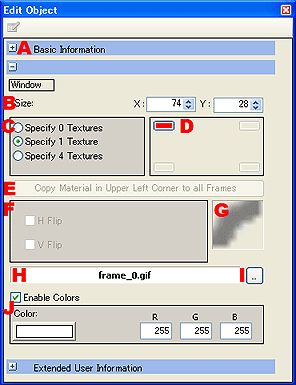

フレームオブジェクト編集
フレームオブジェクトの詳細な編集
フレームオブジェクトは、４角い枠を４隅の画像の組み合わせで作成する機能です。
詳細を設定することで、いろいろなフレームを作成できます。
フレームのオブジェクト編集では、フレームに対して以下の編集を行えます。
|

|
- 基本情報。
オブジェクトの名前、コメント、位置を設定できます。
- フレームオブジェクトのサイズ。
任意のサイズのフレームオブジェクトを作成できます。
- 使用画像枚数の設定。
フレームオブジェクトに使用する画像枚数を設定します。
- 0枚指定。
画像を指定しないフレームオブジェクトを作ります。 - 1枚指定。
左上に指定した画像を４つのコーナーに反転させて配置しフレームを作ります。 - 4枚指定。
４隅の画像を個別に指定します。
- フレーム画像指定位置の選択。
４枚指定した時に有効。
４隅を個別に指定する時、指定位置を選択することができます。
- 左上隅マテリアル情報を全フレームにコピー。
左上隅の画像を４隅にコピーします。
- 画像の向き設定。
選択された隅の画像の向きを設定できます。
- サムネイル表示。
選択された隅の画像のサムネイルを表示します。
- 画像ファイル名の表示。
選択されている隅に使用されている画像のファイル名を表示します。
- 画像ファイルの指定。
ファイル選択ダイアログを表示し、画像ファイルを指定します。
- フレーム内の色の設定。
フレーム内の「色を有効にする」チェックボックスにチェックを入れてフレーム内の色を設定します。
※チェックボックスにチェックを入れなければフレーム内は透明で表示されます。
|